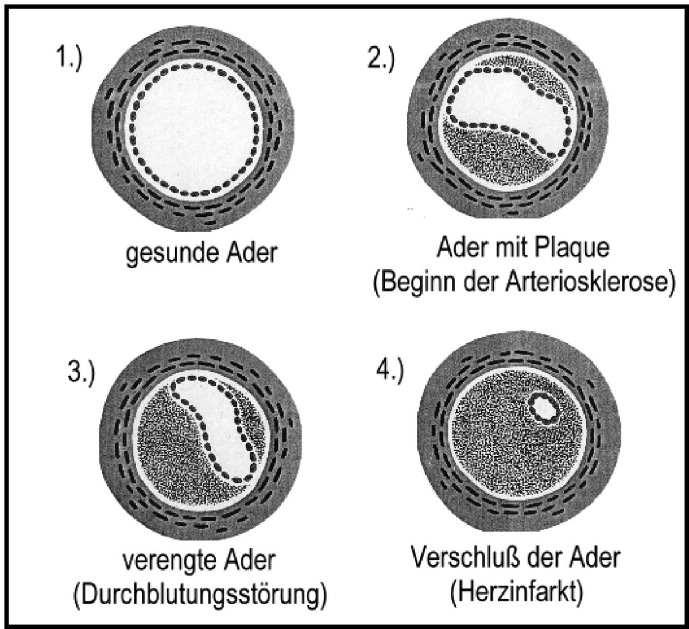

Arteriosklerose
Der Mensch ist so alt, wie seine Gefäße. (Rudolf Virchow 1821-1902)
ALLGEMEIN: Arteriosklerose ist eine Erkrankung der Gefäße, die sich durch Kalkablagerungen verengen und so auch ihre Elastizität verlieren. Die Erkrankung verläuft zwar zunächst im Allgemeinen ohne Symptome, doch arterielle Durchblutungsstörungen können als akutes Ereignis dieser Geißel der Menschheit auftreten, z.B. als Thrombose, Embolie, Schlaganfall, Herzinfarkt, Herzrhythmusstörungen, chronische Beschwerden wie koronare Herzkrankheit oder Raucherbein (sog. Schaufensterkrankheit). Hinweis: Bei einer Aortenklappenstenose führen Kalzium und andere abgelagerte Stoffe dazu, dass die Klappe sich versteift. Normal sind 3 cm. Therapie: Vitamin K2 (MK-7) zuführen. Auch bei einem Aortenaneurysma sind Kalkablagerungen die Ursache. Ab 5 cm Durchmesser wird eine Operation empfohlen. 70 % aller Patienten werden heute mit Stunts versorgt. Auch die Gabe von Antibiotika mit dem Wirkstoff Fluorchinolon zum Beispiel Ciprofloxacin kann zur Ausbildung einer Aneurysma führen (Roter Handbrief/Ärzte). Erkrankt die Aorta, verläuft das oft unbemerkt, doch die Folgen können lebensbedrohlich sein. Bei einer Aortendissektion reißt die Innenwand der Ader ein. Ein Notfall, der selbst von Medizinern oft nicht richtig eingeordnet wird. (MDR - Hauptsache gesund vom 20.02.2020)
URSACHEN: Bewegungsmangel, hoher Blutdruck, Diabetes, Stress, Magnesium-, und Kieselsäuremangel. Nikotin- und Alkoholmissbrauch, Übergewicht bei zu hohem Fett- und Cholesterinspiegel. Er ist der größte Feind der Blutgefäße. Erhöhte Homocystein-Werte. Unentdeckte chronische Entzündungen im Körper (Blut-/CRP-Werte beim Arzt untersuchen lassen). Übersäuerung (siehe Entsäuerung). In neuester Zeit wird auch das Bakterium Chlamydia pneumoniae als Mitverursacher diskutiert (Arzt befragen). Ölschlürfen anwenden, um dieses Bakterium zu eliminieren. Nach neuesten Forschungen ist Arteriosklerose die Folge einer Strukturschwäche der Arterienwände – von abgestorbenen Zellen, die vor allem durch einen Mangel an Vitamin C entsteht! Erhöhter Kalziumspiegel durch die Einnahme von zu viel Vitamin D3, ohne gleichzeitige Gabe von Vitamin K2. Es sorgt dafür, dass Kalzium aus dem weichen Gewebe – wie den Arterien und Venen – verschwindet, wo es unerwünscht und schädlich ist und in die Knochen und Zähne eingebaut wird. Vitamin K2 macht die Knochen stark und die Arterien sauber. Dosis: 180 µg Vitamin K2 MK-7 täglich. Psyche: Die Verhärtung der Adern entspricht oft denen der Seele. Ärger und Angst machen die Arterien eng, was gefährliche Blutgerinnsel auslösen kann.
Die Entstehung der Arteriosklerose

SYMPTOME: Bei der Schaufensterkrankheit verengen sich die Blutgefäße meist in den Beinen. Als Symptom machen sich häufig zuerst Schmerzen beim Gehen bemerkbar. Schwindel, Atemnot, Ohrensausen, kalte, prickelnde Hände und Füße, Konzentrationsstörungen, Müdigkeit, Wadenkrämpfe, schlecht heilende Wunden, Erektionsstörungen. Alarmzeichen: Aussetzen des Erinnerungsvermögens, Seh- und Sprachstörungen, Lähmungen. Gefahr eines Schlaganfalls. Sofort Arzt benachrichtigen.
ERNÄHRUNG: Umstellung auf vorwiegend vegetarische, fettarme Kost, Kochsalz- und Zuckerkonsum einschränken. Bei den jemenitischen Juden, die völlig zuckerfrei leben, lassen sich keine Formen der Arteriosklerose nachweisen. Viel Obst, Äpfel, Bananen, getrocknete Pflaumen (4-5 täglich), Granatäpfel, Datteln sowie Gemüse, Grünkohl, Kartoffeln, Möhren, Tomaten, Paprika, Quitten, Weizenkeime, Haferkleie (40 g täglich), Wirsing (Vitamin E), Spargel, Artischocken, Avocado (enthalten viel Magnesium), Zwiebeln, Walnüsse, Naturreis,Linsen, Sonnenblumenkerne.
- Knoblauch bzw. Bärlauch putzt die Gefäße und bringt sie wieder in Ordnung. Zum rüstigen Alter führt der Lauch, bleib treu ihm bis zum letzten Hauch. (Eugen Roth). Dann bleibt oben (Kopf) Licht und unten (Blase) bleibt man dicht, lieber Gott mehr mag ich nicht. (alte Volksweisheit).
- Weißkraut: 4-6 wöchige Kur/jährlich fein geraspelt, roh (20 Minuten vor dem Essen) verzehren. Nur grob geschnittener, schlecht gekauter Kohl verursacht Blähungen.
- Rapsöl lässt das Blut besser fließen. Walnusssöl, Leinöl.
- Olivenöl verhindert Kalkablagerungen in den Blutgefäßen. Die Bewohner der Insel Kreta haben einen pro Kopfverbrauch von 22 Liter/Jahr (BRD 2 Liter). Sie haben mit dieser Erkrankung ganz wenig zu tun. Verwenden Sie ein natives (natürliches), jungfräuliches Olivenöl (siehe Öle/Fette).
- Hirse 1 x täglich 1 Esslöffel (z.B. Braunhirsemehl) enthält viel Kieselsäure. Sie macht die Gefäße elastischer, wodurch die Durchblutung verbessert wird. Auricularia Heilpilze/Kapseln (Beratung/Bezug).
- Meeresalgen reinigen die Arterien.
GETRÄNKE: 1 Tasse Mistelkraut (über Nacht in kaltem Wasser ansetzen), tagsüber trinken. Schwarztee, Fagorutin Tee ist aus Buchweizen hergestellt. Er enthält unter anderem Rutin für die Gefäßabdichtung. Kaffee: 3-5 Tassen/täglich schützen effektiv die Arterien (Koreanische Studie). Kakao vermindert die Verklumpung der Blutplättchen. Sehr gut ist auch Grüner Tee. Salbeitee öfters getrunken, soll Schlaganfälle verhüten. Ingwertee verdünnt das Blut und senkt den Cholesterinspiegel. Circa 1 cm Ingwerwurzel raspeln, mit 1 Liter kochendem Wasser aufgießen. Generell viel trinken (2 Liter stilles Wasser/täglich). Säfte: Zwiebel-, Knoblauch-, roter Traubensaft. Um einer Arterienverkalkung entgegenzuwirken, eignet sich täglich 1 Glas Granatapfelsaft (50 ml). Er verbessert die Durchblutung des Herzmuskels und bis zu 17 % und verringert Gefäßablagerungen. Eine Apfelessig-Kur im Frühjahr putzt die Gefäße durch und bringt den Organismus wieder in Schwung. Außerdem stärkt Apfelessig das Immunsystem und regt den Geist an. Hierzu gibt man morgens 1 Esslöffel Apfelessig und 1 Teelöffel Honig in ein Glas warmes Wasser. Am besten wirkt es auf nüchternen Magen getrunken. Wer allzu empfindlich reagiert, kann dies aber auch auf den Vormittag verschieben.
Knoblauch-Zitronen-Kur
Dieses Rezept wurde auf einer alten Schiefertafel in Nepal gefunden und wegen ihrer Bedeutung für die Gesundheit der Menschen von der Weltgesundheitsorganisation (WHO) in 51 Sprachen übersetzt. Rezept: 30 geschälte Knoblauchzehen, 5 kleingeschnittene, ungeschälte Zitronen (Bio) im Mixer zerkleinern, mit 1 Liter Wasser aufsetzen und kochen; aber nur einmal aufwallen lassen. Dann abseihen und in eine Flasche füllen. Kalt aufbewahren. Das tägliche Schnapsgläschen (2 cl) trinke man vor der Hauptmahlzeit. Schon nach 3 Wochen täglichen Genusses, ist eine jugendlich-wohlige Regeneration des ganzen Körpers zu verspüren. Verkalkungen/Nebenerscheinungen gehen zurück. Alternativ: Knocit (PZN 7585943/Apotheke) Nach dreiwöchiger Kur sollte man acht Tage pausieren, um dann die zweite dreiwöchige Kur durchzuführen. Dann stellt sich meist ein durchschlagender Erfolg ein. Diese billige, unschädliche und heilsame Kur sollte man jedes Jahr wiederholen. Von dem unangenehmen Duft des Knoblauchs spürt kein Mensch etwas. Die Wirkungskräfte von Knoblauch und Zitrone kommen so voll zur Geltung. Magnesiumchlorid/Apotheke 33 g in 1 Liter Wasser auflösen. Ein Schnaps Gläschen (circa 40 ml) 1 x täglich nach dem Frühstück einnehmen, löst Kalkablagerungen auf. Sonstiges: Regelmäßige Spaziergänge an frischer Luft, dabei immer kräftig ein und 3 x so lange ausatmen. Gymnastik, lauwarme Duschen.
MEDIKAMENTE: Vitamin D3, sog. „25-OH-D-Wert“ im Labor/Arzt in regelmäßigen Abständen von einigen Monaten bestimmen lassen. Normwert: 20-60 ng/ml, entsprechend 50-150 nmol/L. Hinweis: Vitamin D3 Tropfen/Kapseln immer in Verbindung mit Vitamin K2 (MK-7) - nach Rücksprache mit Ihrem Therapeuten einnehmen. Die tägliche Gabe von 180 μg Vitamin K2 (MK-7) verhindert signifikant eine Zunahme der altersbedingten Arterienverkalkung. Beide Mikronährstoffe arbeiten Hand in Hand. Vitamin K2 bringt das Kalzium aus den Gefäßen in die Knochen. Eine Therapie mit Blutverdünnern - ohne die Gabe von Vitamin K2 - kann zahlreiche Nebenwirkungen haben, denn sie birgt u.a. ein erhöhtes Risiko für Arteriosklerose und vaskuläre Kalzifikation (Kalkeinlagerung in die Gefäße). Folsäure kann in Kombination mit Vitamin B6 und B12 den Homocystein-Status (siehe Homocystein) im Blut verringern und so zur Arteriosklerose-Prävention beitragen.
Vitamin E (Weizenkeimöl) hemmt die Entstehung von Blutgerinnseln. Empfehlung des Herzzentrums Dresden (Professor Park - 10.1.2000 MDR): 3 x täglich zu den Mahlzeiten je 700 mg Vitamin C und 200 mg Vitamin E einnehmen (z.B. Evina® Kapseln). Kieselerde (z.B. wilde Braunhirse oder Silicea D12) führt zu elastischen Gefäßen. Weißdornpräparate (Crataegus/Apotheke) können offenbar Kalkablagerungen durch eine bessere Durchblutung der Gefäße lösen und sie dadurch elastisch halten (ausprobieren), z.B. Bomacorin® Tabletten. Ginkgo biloba kann Arteriosklerose verhindern und um bis zu 24 % zurückbilden (Charité Berlin). TELCOR® Arginin plus Tabletten. Arginin wird in Stickstoffmonoxyd umgewandelt, wodurch sich die Gefäße erweitern und die Durchblutung gefördert wird (siehe Hypertonie). Spenglersan® Kolloid A im täglichen Wechsel mit Kolloid R je 3 x täglich 5 Sprühstöße in die Ellenbeuge einreiben. Flohsamen (Mucofalk) bindet Cholesterin im Darm und scheidet es aus. Magnesium: Niedrige Magnesiumspiegel fördern die Arteriosklerose. Magnesium phosphoricum D6 (3 x täglich 2 Tabletten lutschen).